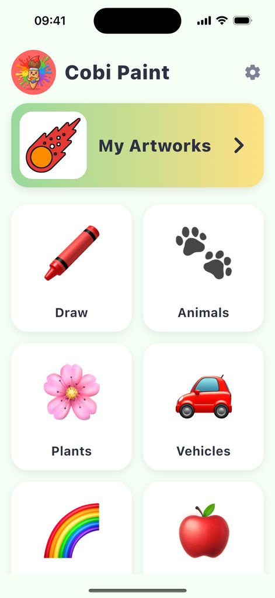
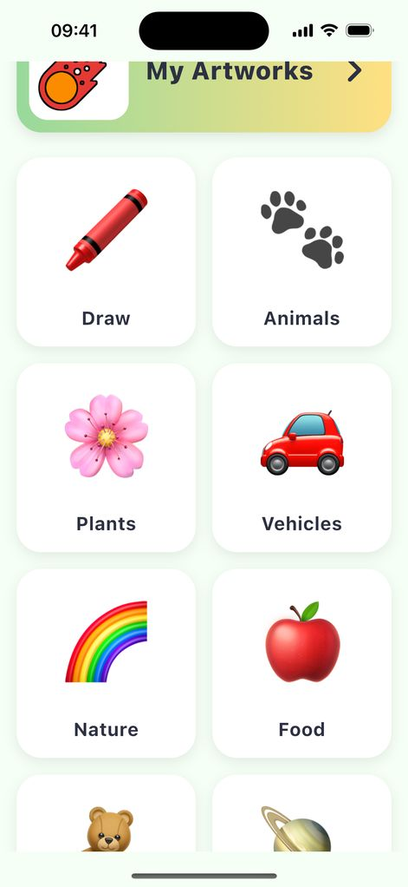
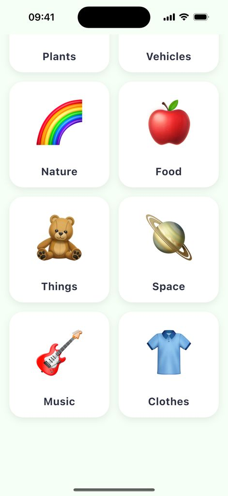
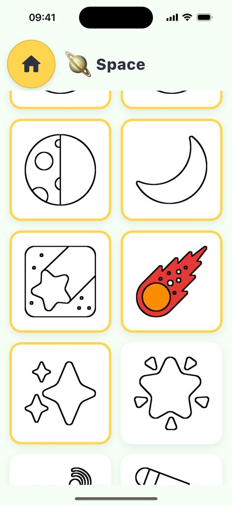
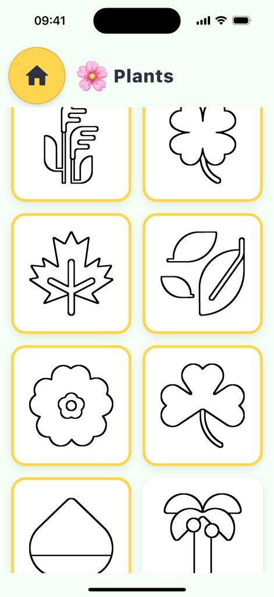
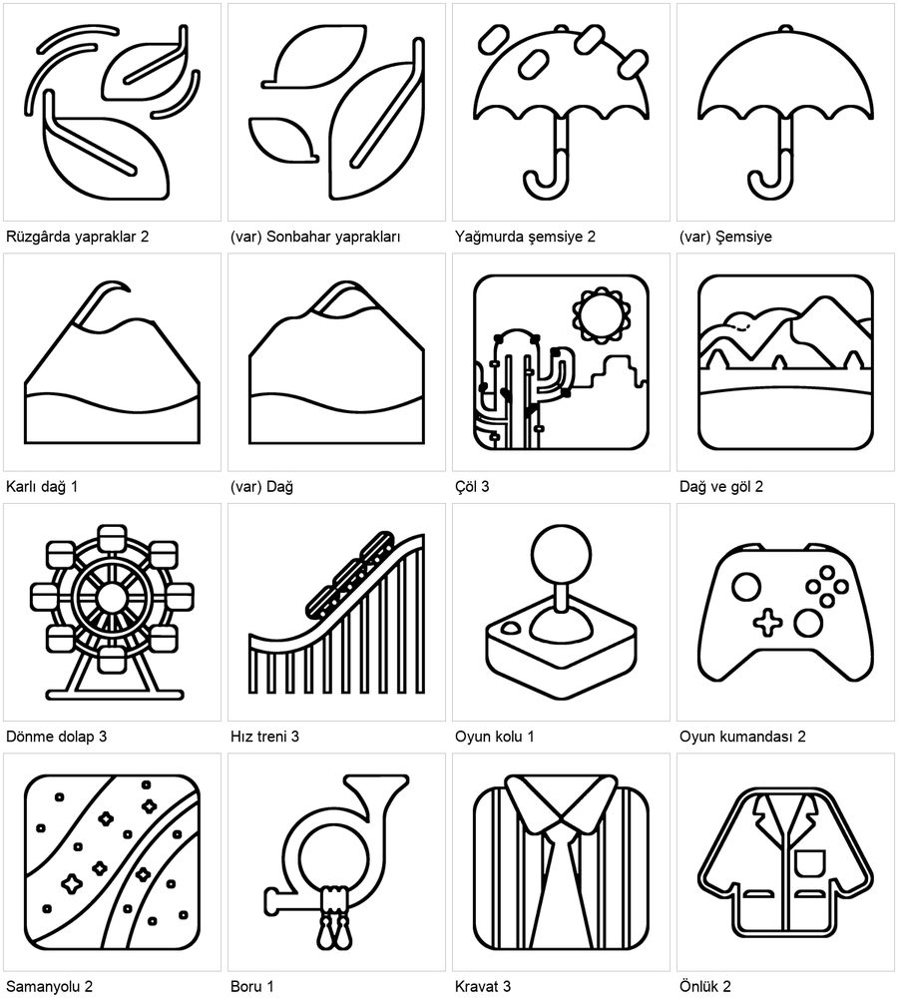
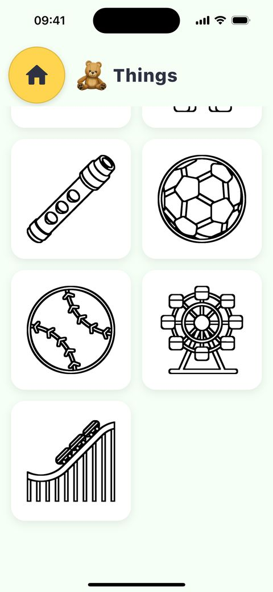
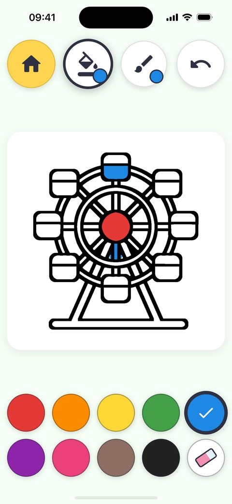

İstenen içerik genişletmesi master'da zaten var: PR #10 bugün 18:33'te birleştirildi ve 9 kategoride 307 sayfa getirdi. Bu oturum içeriği eski tabanda ikinci kez yaptı. O işi kenara aldım ve master'dan yeni bir dal açtım. Bu dal yalnız bir hatayı düzeltiyor: ana ekranı ya da bir kategoriyi kartın üstünden kısa bir kaydırmayla kaydırmak, parmak kalkınca o kartı açıyordu.
plan/icerik-genisletme-2026-11-05.html.release/2.2.0 üstünden açılan claude/faz10-ek-sayfalar dalında.flutter analyze temiz; flutter test 206 testin hepsi geçti. Yeni 3 test düzeltme olmadan düşüyor, düzeltmeyle geçiyor.Bu oturumun worktree'si 21:33'te, PR #10'un birleştirildiği dakikada eski master'dan (ad4855c, 201 sayfa) açıldı. Görev de o eski duruma göre yazılmıştı. Ben de 4 kategori (Uzay, Müzik, Giysiler, Oyun) ve 91 sayfa ekleyip 292 sayfaya çıktım. Sonra simülatörde başka bir oturumdan kalan bir kuyruklu yıldız resmi gördüm. Hafızadaki notu okuyunca PR #10'u fark ettim.
| Karşılaştırma | Sonuç |
|---|---|
| Benim yeni konularım | 87 |
| Bunlardan master'da zaten olan | 69 (Oyun konularımın 16'sı master'da Eşyalar kategorisinde) |
| Yalnız bende olan | 18 (bkz. bölüm 7) |
Eski dalı birleştirmek 69 konuyu ikinci kez ekler: aynı resim iki kategoride, iki ayrı kimlikle görünür. Bu yüzden o işi claude/faz10-icerik-kategoriler-48e4bf dalında tek bir WIP commit'i olarak bıraktım (4a9c7ea, "do not merge").
ForgivingTap, 3 yaşındaki çocuğun kayan dokunuşunu affetmek için Flutter'ın dokunuş tanıyıcısını değil, ham Listener kullanır. Parmak kontrolün 12 lp yakınında kalkarsa dokunuş sayılır. Ancak olay konumu kartın basıldığı andaki yerine göre ölçülür ve aradaki kaydırmayı hiç hesaba katmaz. Bu yüzden kartın üstünden başlayıp kartın boyundan kısa süren bir kaydırma, hem ızgarayı kaydırıyor hem de kartı açıyordu.
| Hayvanlar kartının üstünden yukarı kaydırma | Kayan | Düzeltmeden önce | Sonra |
|---|---|---|---|
| 30 px | 30 px | Hayvanlar açıldı | Açılmadı |
| 80 px | 80 px | Hayvanlar açıldı | Açılmadı |
| 200 px | 200 px | Hayvanlar açıldı | Açılmadı |
| 600 px | 600 px | Açılmadı (parmak kartın dışında kalktı) | Açılmadı |
Master'daki kaydırma testi hatayı yakalamıyordu. Test sürüklemeyi kaydırma alanının ortasından başlatıyor ve 375 pt'lik ekranda o nokta iki kart sütununun arasındaki 16 pt'lik boşluğa düşüyor. Aynı hata kategori ızgarasında (82 hayvan sayfası) ve Eserlerim'de de vardı.
ForgivingTap basma anında çevresindeki her kaydırılabilir alanın konumunu kaydeder. Parmak kalktığında bunlardan biri 12 lp'den fazla kaydıysa dokunuş saymaz. Kartın ekrandaki yerine bakmak yetmiyordu: kaydırma konumu sürüklerken hemen değişir, kartın çizildiği yer ise bir sonraki karede güncellenir.
| Dosya | Değişiklik |
|---|---|
lib/widgets/kid_button.dart | _scrollOffsets() ile basma ve kaldırma arasında kaydırma denetimi (20 satır). |
test/widgets/kid_controls_test.dart | Listeyi 30 ve 120 lp kaydıran kaydırma kart açmaz; yana 60 lp kayan dokunuş yine açar. |
test/app_test.dart | Ana ekranda Hayvanlar kartından başlayan 40 ve 120 lp'lik kaydırma kategori açmaz, ekran kayar, ardından dokunuş Hayvanlar'ı açar. |
.claude/skills/cobi-toddler-ux/SKILL.md | Ç4 kuralı: kayan parmak yine dokunuştur, ama çevresindeki listeyi 12 lp'den fazla kaydırdıysa kaydırmadır. |
Üç yeni test düzeltme olmadan düşüyor, düzeltmeyle geçiyor. Bütün paket 206 test, hepsi geçti; flutter analyze temiz.
CobiPaint iPhone (393 × 852 pt), master ve düzeltmeyle debug derleme, İngilizce cihaz dili.




Kaynak: HIG Accessibility (son değişiklik 9 Haziran 2025) ve projedeki cobi-toddler-ux kuralları.
| Madde | Sonuç | Not |
|---|---|---|
| Standart jest: kaydırma bir eylem başlatmaz | Uyumlu | Önceden düzeltilecek eksikti; şimdi kaydırma yalnız kaydırıyor. |
| Ç4 bağışlayıcı dokunuş | Gerekçeli sapma | Yana kayan parmak eskisi gibi dokunuş. Kaydırılabilir listede 12 lp'den fazla dikey kayma artık kaydırma sayılıyor. Çocuk ızgaranın oynadığını görür, sayfa açılması beklemez. Sabit düğmeler (araç çubuğu, palet) etkilenmez. |
| Dokunma hedefi (44 × 44 pt; Minik'te 64 pt altı yok) | Uyumlu | Boyut değişmedi. |
| VoiceOver, Reduce Motion, haptik | Uyumlu | Semantik dokunuş (Semantics.onTap) bu yoldan geçmiyor; animasyon ve titreşim aynı. |
| iPad, Android | Doğrulanmadı | CobiPaint iPad başka oturumda; CobiPaint_Pixel bu oturumda açılmadı. Değişiklik platformdan bağımsız Flutter kodu. |
Kullanıcı 6 Kasım'da "ekle" dedi. Önce PR #10'un raporuna (plan/icerik-genisletme-2026-11-05.html, bölüm 5) baktım: 18 adaydan 13'ünü o oturum gerekçe yazarak elemişti. İlk turda yalnız PR #10'un ölçütlerine uyan 3 konuyu ekledim (307 → 310). Kullanıcı gerekçeleri okuduktan sonra "yine de ekle" dedi; elenen 13 konuyu da ekledim (310 → 323). Masa zili ve yıldızlı gece bu 13'ün içinde değil, eklenmedi. Bütün sayfalar sayfa denetimini geçiyor (13 sayfa, 0 sorun); eleme gerekçeleri çocuğun sayfayı tanıması ve boyayabilmesiyle ilgiliydi.
| Konu | Seviye | Kategori | Bölge | Karar | Gerekçe ya da PR #10'un eleme nedeni |
|---|---|---|---|---|---|
| Kestane | 1 | Bitkiler | Eklendi | PR #10'da yok; tek parça, büyük alanlı. | |
| Kapalı şemsiye | 1 | Doğa | Eklendi | Mevcut açık şemsiyeden farklı bir çizim. | |
| Fırça | 1 | Eşyalar | Eklendi | Eşyalar'daki boya paleti ve pastel boyanın yanına. | |
| Samanyolu | 2 | Uzay | 11 | Kullanıcı kararıyla eklendi | PR #10: çerçeveli, soyut gökyüzü karosu. |
| Dağ ve göl | 2 | Doğa | 8 | Kullanıcı kararıyla eklendi | PR #10: çerçeveli, soyut manzara. |
| Çöl | 3 | Doğa | 26 | Kullanıcı kararıyla eklendi | PR #10: kalabalık, çerçeveli sahne; kaktüs Bitkiler'de var. |
| Karlı dağ | 1 | Doğa | 4 | Kullanıcı kararıyla eklendi | PR #10: Dağ'la aynı çizim. Ölçtüm: piksellerin %6'sı farklı, yalnız kar çizgisi değişiyor. |
| Yağmurda şemsiye | 2 | Doğa | 9 | Kullanıcı kararıyla eklendi | PR #10: Şemsiye'nin damlalı hâli. |
| Rüzgârda yapraklar | 2 | Bitkiler | 8 | Kullanıcı kararıyla eklendi | PR #10: Sonbahar yaprakları'nın rüzgâr çizgili hâli. |
| Dönme dolap | 3 | Eşyalar | 65 | Kullanıcı kararıyla eklendi | PR #10: sayfanın %19'u mürekkep, alanlar dar. |
| Hız treni | 3 | Eşyalar | 29 | Kullanıcı kararıyla eklendi | PR #10: ince dikmeler dar alanlar bırakıyor. |
| Oyun kolu | 1 | Eşyalar | 7 | Kullanıcı kararıyla eklendi | PR #10: ekran çağrışımı. |
| Oyun kumandası | 2 | Eşyalar | 11 | Kullanıcı kararıyla eklendi | PR #10: ekran çağrışımı. |
| Kravat | 3 | Giysiler | 17 | Kullanıcı kararıyla eklendi | PR #10: çerçeveli gömlek ve kravat; küçük çocuğun giydiği bir şey değil. |
| Önlük | 2 | Giysiler | 10 | Kullanıcı kararıyla eklendi | PR #10: laboratuvar önlüğü, küçük çocuğun tanıdığı bir şey değil. |
| Boru | 1 | Müzik | 7 | Kullanıcı kararıyla eklendi | PR #10: posta borusu, küçük çocuğun tanıdığı bir şey değil. |
| Masa zili | 1 | Eklenmedi | Müzik'te zaten "Zil" sayfası var. 13'ün içinde değil. | ||
| Yıldızlı gece | 3 | Eklenmedi | Çerçeveli, 25 bölgeli kalabalık sahne. 13'ün içinde değil. |


Simülatörde (CobiPaint iPhone, release/2.2.0 ve 13 sayfa, İngilizce, Minik) Eşyalar'ı açtım. Oyun kumandası 2. seviye grubunun sonunda, Dönme dolap ve Hız treni listenin en sonunda. Dönme dolap'ta göbek ve üst kabin tek dokunuşla doldu. Göbeğin altına yaptığım dokunuş teller arasındaki ince bir şeridi boyadı: sayfa çalışıyor, ama bu bölgelerde çocuğun boyadığı alan zor görünür. PR #10'un eleme nedeni buydu. Boyamaları geri aldım.


Yeni 16 sayfanın hepsi ücretli tarafta: her kategoride tam 8 ücretsiz sayfa kuralı ve "bir kez ücretsiz olan ücretsiz kalır" kuralı değişmedi. Sayfalar kategorilerinin sonuna eklendi, mevcut sayfalar ve PNG dosyaları değişmedi. Seviye dağılımı 1: 136, 2: 116, 3: 71. Kategoriler: Hayvanlar 82, Yiyecekler 45, Araçlar 32, Doğa 32, Bitkiler 26, Eşyalar 49, Uzay 14, Müzik 17, Giysiler 26. Dönme dolap, Çöl, Hız treni ve Kravat 3. seviyede. Minik modda kendiliğinden ulaşılan en yüksek düzey 2 olduğu için bu dört sayfa küçük çocuğun kategori listesinde en sonda durur (lib/data/page_order.dart).
4bcb9e9); v2.2.0 etiketi henüz yok. Kullanıcı ardından "PR aç" dedi: sayfalar claude/faz10-ek-sayfalar → master ayrı bir PR ile gidiyor; dal bugünkü master'la çakışmasız birleşiyor. v2.2.0 etiketi bu PR merge edildikten sonra atılmalı; önce atılırsa 2.2.0 bu sayfalar olmadan derlenir. Merge'den sonra dört mağaza setinin ana ekran karesi (05_home.png) 323 başlığıyla değiştirilir ve surum-220-gorseller.zip yenilenir. store_listing.md'deki 2.2.0 metinleri 323 sayfaya göre güncellendi; tanıtım metinlerinin uzunluğu aynı (163 ve 166).tool/store/caption_screenshots.py'deki başlığı 323 yaptım; build/store_screenshots/*_220_secili_captioned setleri bu betikle yeniden üretilmeli. O klasörler ana checkout'ta ve repoda değil; onlara dokunmadım.plan/cobi-paint-yeniden-dogus-plani.html (satır 196) ve gece raporu bölüm 22 hâlâ 310 diyor. O belgeler 2.2.0'ı hazırlayan oturumun; değiştirmedim.store_listing.md'deki "2.2.0'da" notları ve sayılar o sürüme göre yeniden yazılmalı.claude/faz10-icerik-kategoriler-48e4bf birleştirilmemeli; istenirse silinebilir.